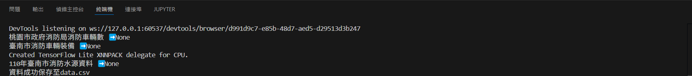

網路爬蟲
要爬蟲的網站
政府公開資料平台
爬取的關鍵字為消防
程式講解
from selenium import webdriver
from selenium.webdriver.chrome.service import Service
from selenium.webdriver.common.by import By
from selenium.webdriver.common.keys import Keys
import time
import pandas as pd
from webdriver_manager.chrome import ChromeDriverManager
from selenium.common.exceptions import NoSuchElementException, ElementNotInteractableException
# 設定 Chrome 瀏覽器選項
options = webdriver.ChromeOptions()
options.add_argument("--disable-blink-features=AutomationControlled")
# 啟動瀏覽器
driver = webdriver.Chrome(service=Service(ChromeDriverManager().install()), options=options)
driver.get("https://data.gov.tw/")
driver.maximize_window()
# 搜尋關鍵字
try:
search_box = driver.find_element(By.ID, "searchbar-input") # 確保 ID 正確
search_box.send_keys("消防")
search_box.send_keys(Keys.ENTER)
except NoSuchElementException:
print("無法找到搜尋框，請檢查 ID 是否變更")
driver.quit()
exit()
# 存放所有資料的列表
data_list = []
# 定義抓取一頁資料的函式
def extract_page_data():
time.sleep(1)
try:
items = driver.find_elements(By.CLASS_NAME, "dataset-list") # 需確認正確的類名
for item in items:
title_element = item.find_element(By.CLASS_NAME, "dataset-title") # 確保標題選擇正確
title = title_element.text.strip()
link = title_element.get_attribute("href")
data_list.append({"標題": title, "連結": link})
print(f"{title} {link}")
except NoSuchElementException:
print("無法獲取資料，請檢查 CSS 選擇器")
# 迴圈抓多頁
count = 0
while count < 3:
time.sleep(2)
extract_page_data()
try:
next_button = driver.find_element(By.CSS_SELECTOR, ".btn-next")
if next_button.is_enabled():
next_button.click()
else:
break # 已經是最後一頁
except (NoSuchElementException, ElementNotInteractableException):
break
count += 1
# 結束瀏覽器
driver.quit()
df = pd.DataFrame(data_list)
df.to_csv(r"data.csv", index=False, encoding="utf-8-sig")
print("資料成功保存至data.csv")
遇到的問題
目前遇到的問題是抓不到連結，以及每次只抓取每一頁的第一筆資料
